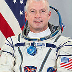

Lyndon B. Johnson Space Center
Houston, Texas 77058
|
National Aeronautics and Space Administration Lyndon B. Johnson Space Center Houston, Texas 77058 |
 |
Biographical Data |
||
Steven R. Swanson (PH.D.)
NASA Astronaut
PERSONAL DATA: Born in Syracuse, New York, but considers Steamboat Springs, Colorado to be his hometown. Married to the former Mary Drake Young of Steamboat Springs, Colorado. They have three children. He enjoys mountain biking, basketball, skiing, weight lifting, trail running, woodworking and spending time with his family. His parents, Stanley and June Swanson, reside in Eagle, Idaho. Her parents, Chan and Martha Young, reside in Steamboat Springs, Colorado.
EDUCATION: Graduated from Steamboat Springs High School in Steamboat Springs, Colorado; received a Bachelor of Science in Engineering Physics from the University of Colorado, and a Master of Applied Science in Computer Systems from Florida Atlantic University, and a Doctorate in Computer Science from Texas A&M University.
SPECIAL HONORS: Recipient of the NASA Exceptional Achievement Medal, the NASA’s Johnson Space Center Certificate of Accommodation, Flight Simulation Engineering Award, and Phi Kappa Phi Honor Society.
EXPERIENCE: Prior to coming to NASA, Swanson worked for GTE in Phoenix, Arizona as a software engineer developing real-time software of telephone system multiplexer/demultiplexers.
NASA EXPERIENCE: Swanson joined NASA as a systems engineer and a flight engineer in the Aircraft Operations Division of NASA’s Johnson Space Center working on the Shuttle Training Aircraft (STA). STA is a complex airborne shuttle simulator, which models the flight characteristics of the space shuttle from 35,000 ft. to main gear touchdown. During his time with the STA, Swanson worked to improvethe STA’s navigation and control systems and incorporate a real-time wind determination algorithm.
In May of 1998, Swanson was selected as mission specialist by NASA and started training in August of 1998. After completing Astronaut Candidate training, which included intensive instruction in Shuttle and International Space Station systems, he was assigned to the Astronaut Office Space Station Operations Branch. He has also worked in the Astronaut Office Robotics Branch and as a CAPCOM (spacecraft communicator) for International Space Station and shuttle missions. Swanson completed advance training in spacewalk, shuttle and space station robotic arm operations, and shuttle rendezvous procedures. During his NASA career, Swanson has completed four spacewalks totaling 26 hours, 22 minutes and accumulated 195 days, 15 hours, 41 minutes in space.
SPACE FLIGHT EXPERIENCE: STS-117 Atlantis (June 8-22, 2007) was the 118th shuttle mission and the 21st mission to visit the International Space Station, delivering the second starboard truss segment, the third set of United States solar arrays, batteries and associated equipment. This successful construction and repair mission involved four spacewalks by two teams of astronauts. Swanson accumulated 13 hours and 45 minutes of extra vehicular activity during two spacewalks. The mission also delivered and returned with an expedition crew member. STS-117 landed at Edwards Air Force Base, California, having traveled 5.8 million miles in 14 days.
STS-119 Discovery (March 15-28, 2009) was the 125th shuttle mission and the 28th mission to visit the space station, delivering the final starboard truss segment, S6. As part of S6, the fourth and final set of U.S. solar arrays, batteries and associated equipment were also delivered, installed and deployed. The successful construction mission consisted of three spacewalks.. Swanson conducted two of the spacewalks totaling 12 hours and 37 minutes. STS-119 landed at the NASA’s Kennedy Space Center after traveling 5.3 million miles in 13 days.
On March 25, 2014, Swanson and fellow crewmates Alexander Skvortsov and Oleg Artemyev launched aboard a Russian Soyuz rocket (TMA-12M) from Baikonur, Kazakhstan as members of Expedition 39. The crew docked with the International Space Station on March 27. During his six-month tour of duty aboard the orbiting laboratory, Swanson performed various Earth remote sensing and biology, bone and muscle physiology studies. In May 2014, Swanson assumed command of the station with the departure of Expedition 39 Commander Koichi Wakata. Expedition 40 concluded on September 10 with a safe landing in central Kazakhstan, marking an end to 169 days in space that covered almost 72 million miles in orbit.
SEPTEMBER 2014